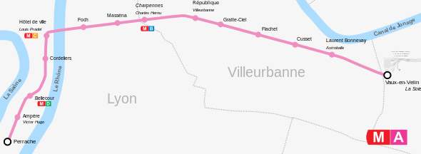

Ligne A du métro

Tracé géographiquement exact de la ligne A. (Source Wikipedia)
- Relie : Perrache à Vaulx en Velin la Soie
- Ouverture : 1978
- Longueur : 9,3 km
- Matériel roulant : MPL 75
- Nombre de stations : 14
- Pilotage : Manuel
- Communes desservies : Lyon, Villeurbanne, Vaulx-en-Velin
- Correspondances TGV - TER : Perrache
- Correspondances Tram : Perrache (T1-T2), Charpennes (T1-T4-T9), Gratte-Ciel (T6), Vaulx-en-Velin La Soie (T3-T7-T9)
- Correspondances Métro : Bellecour (D), Hôtel de Ville (C), Charpennes (B)
- Prolongements : Laurent-Bonnevay-Astroballe -> Vaulx-en-Velin la Soie (1 station, 2007)
- Projets envisagés : Automatisation et agrandissement des rames (2035) - Prolongement Est jusqu'au Parc Olympique Lyonnais à Décines (2035)
- Sites touristiques desservis : Place Bellecour, Hôtel-Dieu, Théâtre des Célestins, Rue de la République, Opéra de Lyon, Hôtel de Ville, Place des Terreaux, Theâtre national Populaire (TNP), Astroballe, Carré de Soie
- Anecdote : La ligne franchit le Rhône entre Foch et Hôtel de Ville mais ne passe pas dans le fleuve mais plutôt sous le Pont Morand, reconstruit spécialement pour le métro